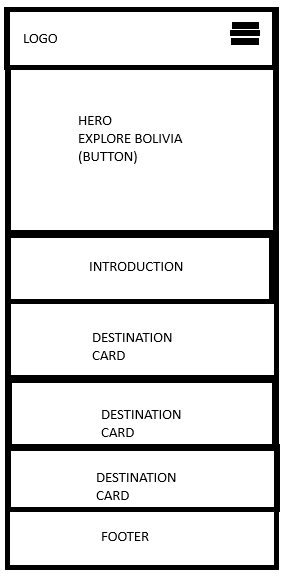
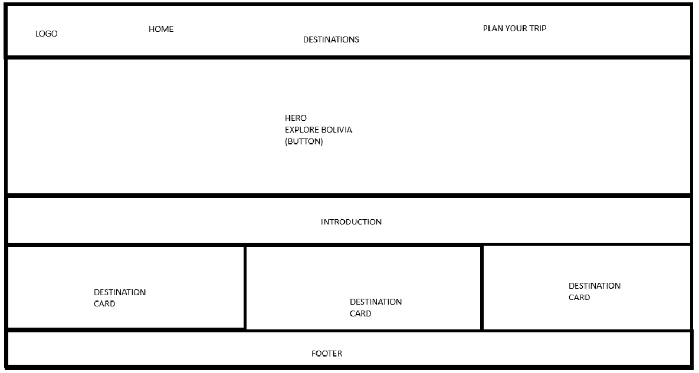

Site Name
Bolivia Explore
The name "Bolivia Explore" was selected because it clearly represents the purpose of the website: helping visitors discover and explore destinations, attractions, and experiences throughout Bolivia.
Site Purpose
Bolivia Explore is a tourism website that provides information about destinations and travel experiences throughout Bolivia. The site will help visitors discover places to visit by providing information such as destination names, locations, descriptions, types of attractions, and recommendations.
The website will also provide a simple form where visitors can submit their travel interests and preferences.
Scenarios
The following questions represent common questions that visitors to the website might have:
- What are the best tourist destinations to visit in Bolivia?
- What activities and attractions are available at each destination?
- Which destination would be best for the type of trip I want to take?
Color Scheme
The color scheme is inspired by the natural landscapes of Bolivia and provides a consistent visual identity throughout the website.
Dark Green - #006B3F
Used for the header, navigation, headings, and important visual elements.
Cream - #F4F1DE
Used as the main background color to provide a comfortable and clean reading experience.
Red - #D62828
Used for buttons, accents, calls to action, and important highlights.
White - #FFFFFF
Used for text on dark backgrounds and for contrast within content areas.
Typography
Poppins - Headings
Poppins will be used for headings, navigation elements, buttons, and other important interface elements. Its strong and modern appearance will help establish the visual identity of the website.
Open Sans - Body Text
Open Sans will be used for paragraphs, descriptions, destination information, forms, and other body content. It provides good readability across different screen sizes.
Wireframes
The following wireframes represent the planned structure of the home page for mobile and larger screen sizes. The wireframes focus on layout, structure, and functionality before detailed visual design is applied.
Mobile View

Desktop View
